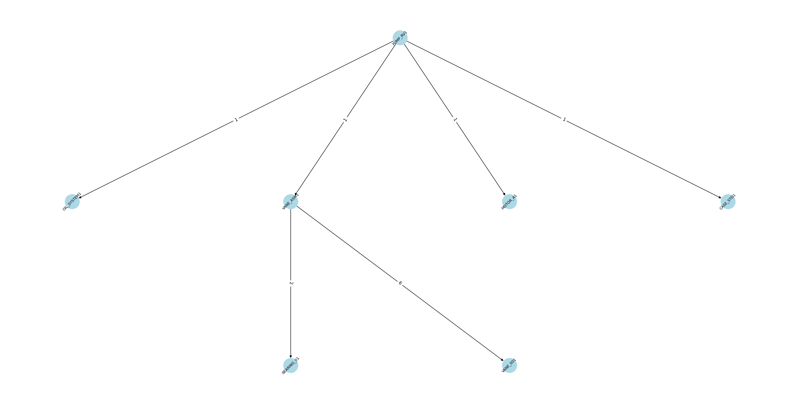

df, df_attributes = get_sample_data()core
A few core functionalities to work with data representing bill of materials
get_sample_data
get_sample_data ()
Return sample BOM data (df) and item attributes (df_attributes) for demonstration purposes.
At this point, we have:
df– Bill of Materials table (predecessor, successor, quantity)df_attributes– Item attributes table (component_type, cost, etc.)
Core Functions
We create one large directed graph containing all nodes and edges from df. For node attributes, we can optionally merge data from df_attributes.
build_complete_graph
build_complete_graph (df, df_attributes=None)
Build a directed graph (DiGraph) from the BOM DataFrame. Optionally enrich nodes with attributes from df_attributes.
G = build_complete_graph(df, df_attributes)
print("Number of nodes:", G.number_of_nodes())
print("Number of edges:", G.number_of_edges())Number of nodes: 20
Number of edges: 21If we want to see which assemblies or products contain a given part, we can move upwards in the graph (following edges backwards).
get_all_predecessors
get_all_predecessors (G, node_id)
Return a list of all predecessors (ancestors) of node_id. This effectively finds all assemblies or parent items that contain node_id.
Now, we can answer questions like: > Where is component ‘MOTOR_A1’ installed?
get_all_predecessors(G, 'MOTOR_A1')['PUMP_RV1', 'PUMP_RV2', 'PUMP_CL1']Similarly, we can move down the graph to find all sub-components or child items of a given product or assembly.
get_all_successors
get_all_successors (G, node_id)
Return a list of all successors (descendants) of node_id. This effectively finds the complete set of parts that make up node_id.
Now, we can answer questions like: > What component are installed in ‘PUMP_RV1’?
get_all_successors(G, 'PUMP_RV1')['MOTOR_A1', 'CASE_STD1', 'VANE_ASM1', 'OIL_SYSTEM1', 'VANE_001', 'BEARING_01']We can select a sub_graph by giving a root node and then searching for all successors.
select_subg_by_root
select_subg_by_root (G, root_id)
sub_g = select_subg_by_root(G, 'PUMP_RV1')
sub_g.nodes()NodeView(('BEARING_01', 'VANE_001', 'CASE_STD1', 'MOTOR_A1', 'VANE_ASM1', 'PUMP_RV1', 'OIL_SYSTEM1'))For a multipartite (hierarchical) layout in NetworkX, each node must have a level attribute. The “level” is typically “0” for a root product, “1” for its direct children, “2” for those children’s children, etc. This function automatically detects the root(s) (any node with no incoming edges) and assigns levels by breadth-first search.
get_all_roots
get_all_roots (G)
Returns a list of nodes with no ingoing edges (root_nodes)
add_levels
add_levels (G)
Calculate levels starting from root
sub_g = add_levels(sub_g)
[(n[0],n[1]['level']) for n in sub_g.nodes(data=True)][('BEARING_01', 2),
('VANE_001', 2),
('CASE_STD1', 1),
('MOTOR_A1', 1),
('VANE_ASM1', 1),
('PUMP_RV1', 0),
('OIL_SYSTEM1', 1)]The depth of the bill of materials can give us information about the depth of added value per product.
max([n[1]['level'] for n in sub_g.nodes(data=True)])2Visualizing
Finally, we create a plotting function that can handle:
- Either a multipartite layout (if levels are assigned)
- Or a kamada_kawai layout (force-directed)
We also display edge attributes (quantity), and we allow parameter overrides (font size, node size, color, etc.) for quick styling changes.
plot_graph
plot_graph (G, layout='multipartite', figsize=(24, 12), font_size=8, node_size=1000, node_color='lightblue', direction='top_to_bottom', label_rotation=45)
Plot a graph with specified layout and styling.
| Type | Default | Details | |
|---|---|---|---|
| G | NetworkX graph | ||
| layout | str | multipartite | ‘multipartite’ or ‘kamada_kawai’ |
| figsize | tuple | (24, 12) | |
| font_size | int | 8 | |
| node_size | int | 1000 | |
| node_color | str | lightblue | |
| direction | str | top_to_bottom | if layout is multipartite the direction is top to bottom, to rotate set to None |
| label_rotation | int | 45 | Rotation angle for node labels (in degrees) |
plot_graph(sub_g)
Creating a binary matrix
We can also create a binary matrix, with endproducts in the index and parts as columns. This is very helpful, for further analysis, like similarity searches and product clustering.
create_binary_matrix
create_binary_matrix (G, root_nodes=None)
Creates a binary matrix with endproducts as indices and parts as columns
b_matrix = create_binary_matrix(G)
b_matrix| parts | BEARING_01 | BEARING_02 | CASE_CL1 | CASE_SC1 | CASE_STD1 | CLAW_001 | CLAW_ASM1 | MOTOR_A1 | MOTOR_B1 | OIL_SYSTEM1 | SCREW_001 | SCREW_ASM1 | VANE_001 | VANE_002 | VANE_ASM1 | VANE_ASM2 |
|---|---|---|---|---|---|---|---|---|---|---|---|---|---|---|---|---|
| head | ||||||||||||||||
| PUMP_CL1 | 0 | 1 | 1 | 0 | 0 | 1 | 1 | 1 | 0 | 0 | 0 | 0 | 0 | 0 | 0 | 0 |
| PUMP_RV1 | 1 | 0 | 0 | 0 | 1 | 0 | 0 | 1 | 0 | 1 | 0 | 0 | 1 | 0 | 1 | 0 |
| PUMP_RV2 | 1 | 0 | 0 | 0 | 1 | 0 | 0 | 1 | 0 | 0 | 0 | 0 | 0 | 1 | 0 | 1 |
| PUMP_SC1 | 0 | 1 | 0 | 1 | 0 | 0 | 0 | 0 | 1 | 0 | 1 | 1 | 0 | 0 | 0 | 0 |
Creating a matrix for parts utilisation
We can also create a matrix, with endproducts in the index and parts as columns and the values representing some value (for example cost or quantity or something else). This is very helpful, for further analysis, like similarity searches and product clustering.
G.out_edges(['PUMP_RV1'], data=True)OutEdgeDataView([('PUMP_RV1', 'MOTOR_A1', {'quantity': 1}), ('PUMP_RV1', 'CASE_STD1', {'quantity': 1}), ('PUMP_RV1', 'VANE_ASM1', {'quantity': 1}), ('PUMP_RV1', 'OIL_SYSTEM1', {'quantity': 1})])elist = [[u, v, data['quantity']] for u,v,data in G.out_edges(['PUMP_RV1'], data=True)]
elist[['PUMP_RV1', 'MOTOR_A1', 1],
['PUMP_RV1', 'CASE_STD1', 1],
['PUMP_RV1', 'VANE_ASM1', 1],
['PUMP_RV1', 'OIL_SYSTEM1', 1]]get_all_successor_edges
get_all_successor_edges (G, node_id, attr='quantity', default=None)
Return a list of all edge pairs for node_id with the specified attribute.
get_all_predecessor_edges
get_all_predecessor_edges (G, node_id, attr='quantity', default=None)
Return a list of all predecessor edges for node_id with the specified attribute.
get_all_successor_edges(G, 'PUMP_RV1')[['PUMP_RV1', 'PUMP_RV1', 'MOTOR_A1', 1],
['PUMP_RV1', 'PUMP_RV1', 'CASE_STD1', 1],
['PUMP_RV1', 'PUMP_RV1', 'VANE_ASM1', 1],
['PUMP_RV1', 'PUMP_RV1', 'OIL_SYSTEM1', 1],
['PUMP_RV1', 'VANE_ASM1', 'VANE_001', 6],
['PUMP_RV1', 'VANE_ASM1', 'BEARING_01', 2]]get_all_successor_edges(G, 'BEARING_01')[]get_all_predecessor_edges(G, 'PUMP_RV1')[]get_all_predecessor_edges(G, 'BEARING_01')[['BEARING_01', 'VANE_ASM1', 'BEARING_01', 2],
['BEARING_01', 'VANE_ASM2', 'BEARING_01', 2],
['BEARING_01', 'PUMP_RV1', 'VANE_ASM1', 1],
['BEARING_01', 'PUMP_RV2', 'VANE_ASM2', 1]]dfs = [pd.DataFrame(get_all_successor_edges(G, root)) for root in get_all_roots(G)]
dfs[:2][ 0 1 2 3
0 PUMP_RV1 PUMP_RV1 MOTOR_A1 1
1 PUMP_RV1 PUMP_RV1 CASE_STD1 1
2 PUMP_RV1 PUMP_RV1 VANE_ASM1 1
3 PUMP_RV1 PUMP_RV1 OIL_SYSTEM1 1
4 PUMP_RV1 VANE_ASM1 VANE_001 6
5 PUMP_RV1 VANE_ASM1 BEARING_01 2,
0 1 2 3
0 PUMP_RV2 PUMP_RV2 MOTOR_A1 1
1 PUMP_RV2 PUMP_RV2 CASE_STD1 1
2 PUMP_RV2 PUMP_RV2 VANE_ASM2 1
3 PUMP_RV2 VANE_ASM2 VANE_002 6
4 PUMP_RV2 VANE_ASM2 BEARING_01 2]final_df = pd.concat(dfs)
final_df.head()| 0 | 1 | 2 | 3 | |
|---|---|---|---|---|
| 0 | PUMP_RV1 | PUMP_RV1 | MOTOR_A1 | 1 |
| 1 | PUMP_RV1 | PUMP_RV1 | CASE_STD1 | 1 |
| 2 | PUMP_RV1 | PUMP_RV1 | VANE_ASM1 | 1 |
| 3 | PUMP_RV1 | PUMP_RV1 | OIL_SYSTEM1 | 1 |
| 4 | PUMP_RV1 | VANE_ASM1 | VANE_001 | 6 |
final_df.columns = ['head', 'parent', 'child', 'quantity']
final_df.head()| head | parent | child | quantity | |
|---|---|---|---|---|
| 0 | PUMP_RV1 | PUMP_RV1 | MOTOR_A1 | 1 |
| 1 | PUMP_RV1 | PUMP_RV1 | CASE_STD1 | 1 |
| 2 | PUMP_RV1 | PUMP_RV1 | VANE_ASM1 | 1 |
| 3 | PUMP_RV1 | PUMP_RV1 | OIL_SYSTEM1 | 1 |
| 4 | PUMP_RV1 | VANE_ASM1 | VANE_001 | 6 |
final_df.pivot_table(index='head', columns='child', values='quantity', aggfunc='sum')| child | BEARING_01 | BEARING_02 | CASE_CL1 | CASE_SC1 | CASE_STD1 | CLAW_001 | CLAW_ASM1 | MOTOR_A1 | MOTOR_B1 | OIL_SYSTEM1 | SCREW_001 | SCREW_ASM1 | VANE_001 | VANE_002 | VANE_ASM1 | VANE_ASM2 |
|---|---|---|---|---|---|---|---|---|---|---|---|---|---|---|---|---|
| head | ||||||||||||||||
| PUMP_CL1 | NaN | 4.0 | 1.0 | NaN | NaN | 2.0 | 1.0 | 1.0 | NaN | NaN | NaN | NaN | NaN | NaN | NaN | NaN |
| PUMP_RV1 | 2.0 | NaN | NaN | NaN | 1.0 | NaN | NaN | 1.0 | NaN | 1.0 | NaN | NaN | 6.0 | NaN | 1.0 | NaN |
| PUMP_RV2 | 2.0 | NaN | NaN | NaN | 1.0 | NaN | NaN | 1.0 | NaN | NaN | NaN | NaN | NaN | 6.0 | NaN | 1.0 |
| PUMP_SC1 | NaN | 4.0 | NaN | 1.0 | NaN | NaN | NaN | NaN | 1.0 | NaN | 2.0 | 1.0 | NaN | NaN | NaN | NaN |
create_matrix
create_matrix (G, attr='quantity', root_nodes=None)
Creates a matrix with endproducts as indices and parts as columns and values as attributes
create_matrix(G)| child | BEARING_01 | BEARING_02 | CASE_CL1 | CASE_SC1 | CASE_STD1 | CLAW_001 | CLAW_ASM1 | MOTOR_A1 | MOTOR_B1 | OIL_SYSTEM1 | SCREW_001 | SCREW_ASM1 | VANE_001 | VANE_002 | VANE_ASM1 | VANE_ASM2 |
|---|---|---|---|---|---|---|---|---|---|---|---|---|---|---|---|---|
| head | ||||||||||||||||
| PUMP_CL1 | NaN | 4.0 | 1.0 | NaN | NaN | 2.0 | 1.0 | 1.0 | NaN | NaN | NaN | NaN | NaN | NaN | NaN | NaN |
| PUMP_RV1 | 2.0 | NaN | NaN | NaN | 1.0 | NaN | NaN | 1.0 | NaN | 1.0 | NaN | NaN | 6.0 | NaN | 1.0 | NaN |
| PUMP_RV2 | 2.0 | NaN | NaN | NaN | 1.0 | NaN | NaN | 1.0 | NaN | NaN | NaN | NaN | NaN | 6.0 | NaN | 1.0 |
| PUMP_SC1 | NaN | 4.0 | NaN | 1.0 | NaN | NaN | NaN | NaN | 1.0 | NaN | 2.0 | 1.0 | NaN | NaN | NaN | NaN |